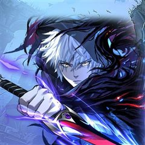
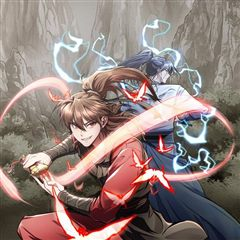

무장 - 무투전 같은 웹툰 추천

무장 - 무투전 · 김철현
무장 - 무투전 재밌게 봤다면 이 웹툰들도 좋아할 거예요. 같은 장르이면서 자극적인, 복수극 같은 요소가 겹치는 작품을, 겹치는 요소가 많은 순서로 20개 골랐어요.
2026-09-30 기준 · 네이버웹툰·카카오웹툰·레진코믹스 · 성인 작품 제외
내 취향으로 직접 골라 추천받기 →-
1
 카카오웹툰
카카오웹툰수라전설 독룡
유구한 역사를 자랑하는 약문(藥門)들의 잇따른 멸문지화. 시체가 산처럼 쌓이고 피가 바다처럼 흐르는 절망의 지옥에서 마침내 수라(修羅)가 눈을 뜬다. 하나도 남김없이 모두 죽일 것이다. 놈들을 전부 죽일 때까지 절대로 끝내지 않아. 약문 백화절곡의…
자극적인복수극액션무협카카오웹툰에서 보기 → -
2

-
3
 카카오웹툰
카카오웹툰신마대제
정체불명의 살수에게 할아버지를 잃은 소년, 부은설. 복수를 위해 마도십문 무학과 피의 실전을 삼켜 무림 최강으로 거듭난다. “반드시 찾아내 죽여주마.” 지금, 천하만마의 성지에서 무림을 집어삼킬 신마(神魔)가 눈을 뜬다.
자극적인복수극액션무협카카오웹툰에서 보기 → -
4
 카카오웹툰
카카오웹툰창귀무쌍
평생 전장 만을 활보하며 살아온 늙은 노병 '추이'는 자신이 죽여 온 자들의 원념에 사로잡혀 죽음에 이른다. 추이가 다시 눈을 떴을 때, 이유는 알 수 없지만 아직 무공도 배우지 못하고 쟁자수로 일하던 어린 시절로 회귀해 있었다. 다시 돌아온 추이는…
자극적인복수극액션무협카카오웹툰에서 보기 → -
5
 네이버웹툰
네이버웹툰백XX
정보사(HID) 요원 '백이수'와 범죄 조직의 보스인 쌍둥이 형 '백도경'. 같은 얼굴 다른 삶을 살아온 쌍둥이 형제. 조직에 배신당한 동생은 자신의 신분을 버리고 형이 되기로 한다. 정보사요원, 범죄 조직의 보스가 되다...!
자극적인복수극액션네이버웹툰에서 보기 → · 백XX 같은 웹툰 → -
6

-
7
 카카오웹툰
카카오웹툰인어기담
내가 바뀌고 있다. 인어 고기는 불로불사의 영약이 아니었던 걸까? 고려 말, 전쟁을 피해 도망치던 한 귀족 소녀가 살기 위해 인어 고기를 먹는 순간 그 소녀의 쌍둥이 동생, 그녀가 새로이 정착한 마을 사람들, 그녀가 운명의 짝이라 믿게 된 한 남자의…
자극적인복수극무협카카오웹툰에서 보기 → -
8

카카오웹툰히든 직업 암살자로 회귀했습니다
잠들면 강제로 끌려가는 게임의 세계, 「어비스」. 2025년, 그 현상은 갑작스레 인류를 덮쳤다. 게임 속 유일한 통화는 「수명」 죽으면 수명을 잃고 몬스터를 쓰러뜨리면 수명을 얻는다. 나는 오직 의붓여동생을 지키기 위해 모든 것을 바쳐 싸웠다. 하…
자극적인복수극액션카카오웹툰에서 보기 → -
9
 네이버웹툰
네이버웹툰첩보원 악어새
베일에 싸인 조직, 국정원 산하 민간 첩보기관 ‘악어’. 그곳에서 활동하는 프리랜서 첩보원, ‘코드네임 악어새’. 아버지를 죽이고 조직을 집어삼키려는 국정원에 맞서 싸워라!
자극적인복수극액션네이버웹툰에서 보기 → -
10
 네이버웹툰
네이버웹툰레벨업! 여신님
용사로 점찍어둔 소년을 전생시키려 한 여신. 그런데 이 소년, 무언가 이상하다. 인간이라곤 생각이 들지않는 비정상적인 파워... 정신을 차려보니 그에게 참패하고, 현대로 전생된 여신. 하루아침에 평범한 고등학생이 되어버린 여신은 학교 정벌로 레벨업을…
자극적인복수극액션네이버웹툰에서 보기 → -
11
 카카오웹툰
카카오웹툰군림천하
"너만은 꼭 군림천하 해야 한다!” 그 한마디로 진산월의 운명이 결정됐다. 스물세 살, 그는 종남파의 장문인이 되었다. 남은 이들은 단 8명의 제자뿐. 한때 천하제일을 꿈꿨지만, 지금은 명맥만을 잇는 문파. 사부의 유지를 위해, 살아남기 위해— 진산…
자극적인액션무협카카오웹툰에서 보기 → · 군림천하 같은 웹툰 → -
12
 네이버웹툰
네이버웹툰천마육성
마교의 태왕각주 ‘사마귀’의 명령으로 화산파 출몰 지역으로 파견나간 비객조. ‘설휘’는 화산파의 절대고수 ‘구종명’에게 죽임을 당할 위기에 처한다. 그때 눈 앞에 상태창이 나타나고 정찰 임무를 받기 직전으로 회귀하게 된다. 설휘는 자신이 전생에서 죽…
자극적인액션무협네이버웹툰에서 보기 → · 천마육성 같은 웹툰 → -
13
 네이버웹툰
네이버웹툰절대검감
단전이 부숴졌다는 이유로 집에서는 내놓은 자식 취급을 받던 소운휘는 혈교에 납치되어서도 삼류 첩자로 살아왔다. 어느 날, 전설로만 알려진 검선비록을 찾는데 이용당하다 죽은 운휘는 10년 전, 혈교에 납치되던 그 날로 돌아가게 되고 검의 목소리를 듣는…
복수극액션무협네이버웹툰에서 보기 → · 절대검감 같은 웹툰 → -
14
 네이버웹툰
네이버웹툰흑사
마교와의 마지막 전투에서 무림맹에게 배신당해 모든 전우를 잃은 흑사대장 정화… 악착같이 살아남은 그녀는 맹세한다. 전우들을 죽음으로 몰아넣은 마교와 무림맹 모두 없애버리겠다고. ”하늘이시여! 정녕 대의가 살아있다면… 죽어간 전우들의 한을 씻어낼 기회…
복수극액션무협네이버웹툰에서 보기 → -
15
 네이버웹툰
네이버웹툰천씨세가의 망나니가 되었다
천씨세가의 대공자, 천무량을 평생 호위하며 충성을 다한 한 무사, 무명(無名) 하지만 천무량에게 배신당해 생을 마감한다. 그러나 다시 눈을 뜬 그는 자신을 죽인 천씨세가의 망나니 대공자, 천무량이 되어 있었다. 과거의 기억과 무공, 냉정한 판단력을…
복수극액션무협네이버웹툰에서 보기 → -
16

-
17

카카오웹툰사마쌍협
"우리 가주는 무척 아둔한 사람이다." 감숙설가의 하인 자운엽은 그렇게 생각했다. 새 안주인 추산미에게 놀아나는 아둔한 가주, 그와 반대로 올곧은 성품의 큰공자 설수범. "큰공자 설수범은 내가 아는 한 가장 무서운 인간이다!" 도둑질을 하다 걸려 그…
복수극액션무협카카오웹툰에서 보기 → -
18
 카카오웹툰
카카오웹툰괴공유록
불의의 사고로 의식을 잃었다가 잠에서 깼을 땐, 삼십 년이란 세월이 훌쩍 지난 뒤였다. 그 사이 사문인 백검문은 쇠락의 길을 걷다 무림 세력에게 멸문지화를 당했으며 사형이자 장문인이었던 진영림이 비명 했다는 비보를 듣게 되는데… 존재 자체만으로도 강…
복수극액션무협카카오웹툰에서 보기 → -
19카카오웹툰
질풍패도
반년 만에 끝나 버린 북마교의 난(亂). 승리를 거머쥔 강호 무림, 다가올 난세를 평정하기 위해 숙적의 혼을 일깨우다. 천하 모든 마도(魔道)를 소거시키기 위한 한 남자의 무림행!
복수극액션무협카카오웹툰에서 보기 → -
20
 카카오웹툰
카카오웹툰전생마인
천마신교의 소교주를 지키기 위해 한계를 벗어난 수련은 거친 천마신교의 그림자. 그 공포스러운 그림자들 중 역사 상 최초로 극마의 고수가 등장했다. 소교주를 지키기 위해 강해지라 했다. 그것이 소교주를 지키는, 그림자의 숙명이라고 그렇게 한 평생을 그…
복수극액션무협카카오웹툰에서 보기 →